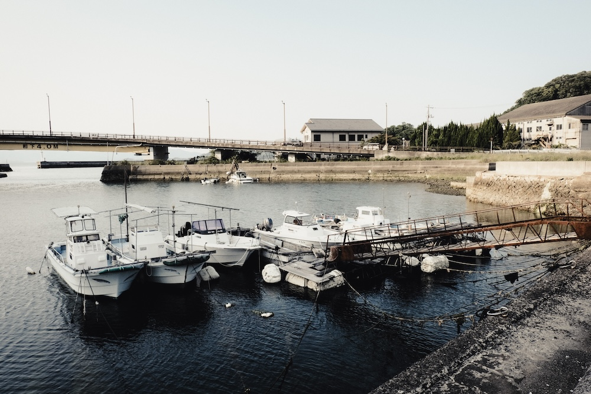
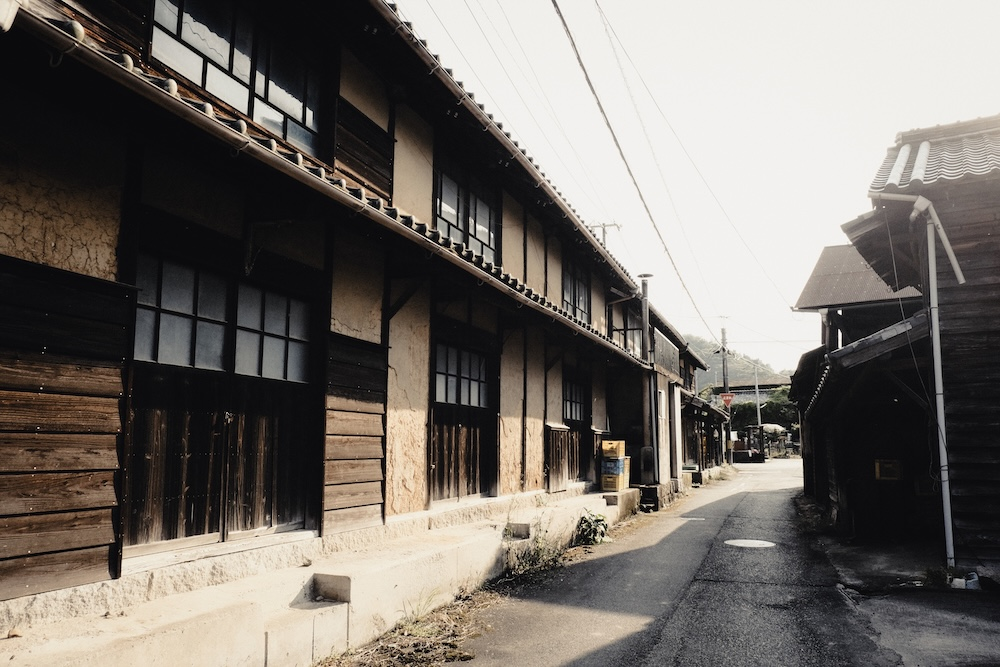
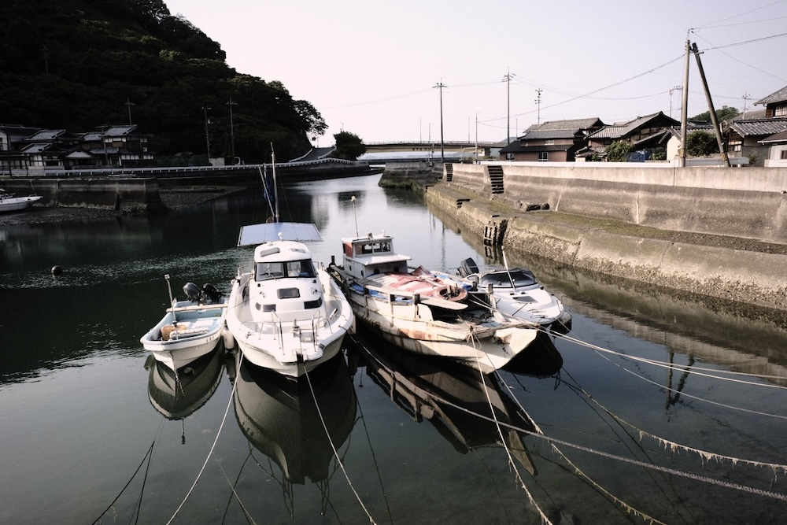
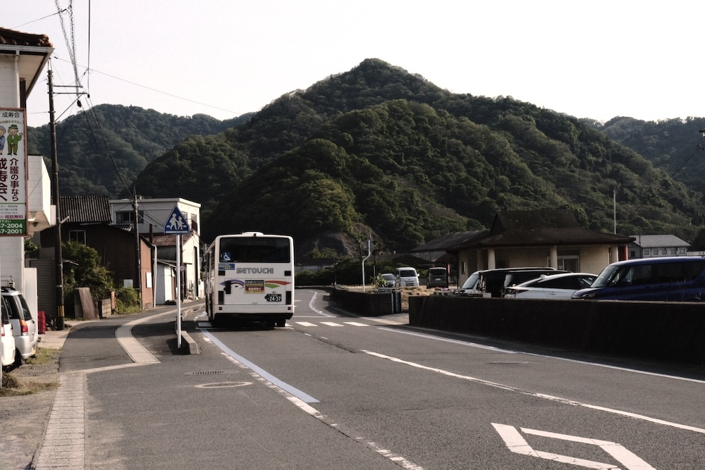

探訪:2025-6, 撮影:Fujifilm X-T2 大崎下島の北部、豊町の中心部をなす集落で、小学校や郵便局、農協の施設などがある。大崎下島の他の集落と同様に柑橘栽培で栄えた集落で、山肌には柑橘類の段々畑が形成されている。 港には何艘かの船が停泊しており、そのうちの一隻が「みかんメッセージ館」に展示されている農船大長丸と同様の形式の木造船であり、農船ではないかと思われる。
久比の風景




▶︎戻る